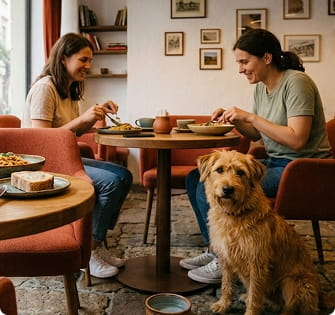

TERAKOT
Café
Adresse:
Bismarckstr. 2, 25421 Pinneberg, Deutschland
Unsere nummer:
Café TERAKOT
Bismarckstr. 2, 25421 Pinneberg, Deutschland
WIR SCHENKEN WÄRME
TERAKOT – ein modernes, gemütliches Café mit warmer Atmosphäre, gutem Kaffee und einfachen Speisen, geschaffen für Menschen, die den Komfort eines Ortes schätzen, an den man gerne zurückkehrt.

Adresse:
Bismarckstr. 2, 25421 Pinneberg, Deutschland
Unsere Nummer:
+49 162 479 24 25E-Mail:
terakot@teams.deArbeitszeit:
Mo-Sa: 08:00 - 21:00
So: 09:00 - 22:00